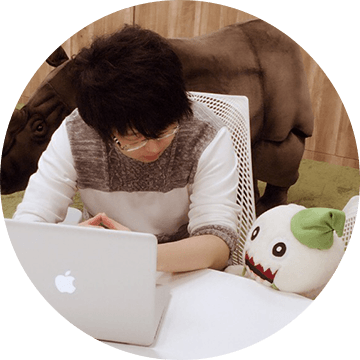

CONCEPT
西山大輔の目指した美味しさ

目指したのは”お米”のような、
どんな場所でも活躍できるクリエイター
「西山 大輔」は、経験に裏打ちされた高度な技術力や、
洗練された美術力を持つ“主菜”のようなデザイナーではありません。
持ち味は、デザイナーという枠に囚われない幅広い業務範囲。
そのワークスタイルがもたらす職種を超えたコミュニケーションは、
チーム開発の現場にておおいに力を発揮します。
“主菜”の味を受け止め、調和し、
食卓を一つに纏め上げる “お米”のようなデザイナーは、
どんな場所でも必要とされるのではないでしょうか。
そんな”お米”のようなクリエイターが「西山 大輔」なのです。